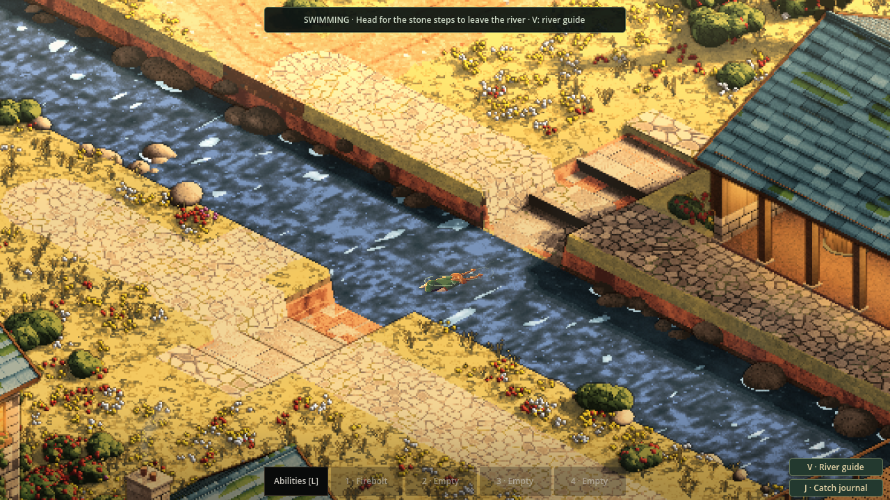
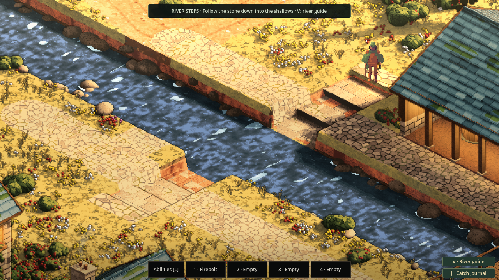
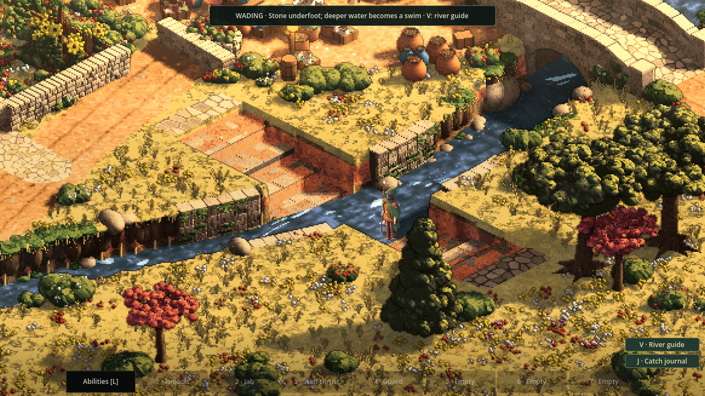
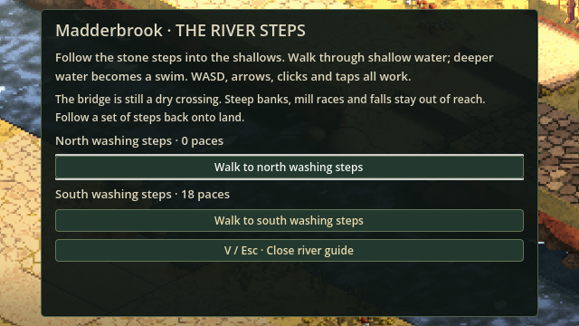

The river is a route
24 October 2026
Stone steps now lead into Sprawl's town rivers. Wade through Kilnworth's shallows or swim Madderbrook's deeper channel, reach the far landing, and climb safely back onto the lane.

A way in, and a way home
The first obstacle was the bank. Several town rivers sit well below the street, behind a steep face of earth or masonry. Removing the old water barrier would have let the traveller drop down through that face, then struggle to get back out.
Madderbrook now has washing steps on both banks, with shallow stone landings beneath the surface. Kilnworth has river steps too, leading into its shallower stream. Those steps belong to the town itself: the same stone you see is the ground your feet follow. The deeper channel remains between Madderbrook's landings, so the journey has a clear rhythm: descend, wade, swim, find stone underfoot, climb out.
The visual pass gives the steps worn individual stones, darker joints and damp lower courses beside the water. A flush stone apron leads in from the lane, and the entrance stays clear of surrounding plants and boulders. That makes the way down easier to read without changing where the traveller can stand.

The river keeps its boundaries. An unserved high bank still stops you. Mill races and falls remain closed, and a wall beside the water is still a wall. The bridges remain dry routes above the channel. Timber supports also stop a swimmer's body; the space beneath stone bridges stays closed in this first version while their underwater openings await a shared physical model.
The same traveller, in the water
Shallow water slows your walk. Where the bed drops away, the traveller pitches forward into a swimming stroke. The body, clothes and sixteen facing directions come from the existing character system, with a twelve-frame stroke carrying the movement through each direction.
Getting the waterline right mattered. Cutting a swimming figure across the screen can remove a forward arm while leaving a boot apparently floating behind it. The new cut follows the body's actual horizontal water plane instead. Wading has its own visible waterline, with the feet still resting on the submerged stone beneath you.

Broken crests gather around the head and shoulders, and a short curved wake trails behind a moving swimmer. The contact follows the horizontal water surface as the traveller turns; ripples spread from each meeting with the water. Reduced motion removes the animated trails while keeping the journey readable. The lantern is stowed in the water and returns to its previous setting on dry ground. Fishing reels in when you enter, and swimming leaves no trail of bootprints across the river.
Finding the crossing
The usual controls stay with you. WASD or the arrow keys move through the shallows and across deep water. Clicks and taps can take the traveller between supported water and land, using the same physical boundaries as walking by hand.
Press V for the river guide. It names the surveyed steps and can walk you to a landing from your current position. In towns without surveyed access, it says so. Opening the guide stops movement; closing it waits for a held movement key to be released before handing control back.

What the first crossing uncovered
The native playthrough found a problem that the movement rules alone could not reveal. A tap on deep water could select a hidden patch of base ground beneath the river. That patch was unsuitable for walking, so the traveller simply stayed still. Water picking now rejects those unsupported ground hits before they can steal the destination.
The larger animation pack exposed a second problem. It could outgrow the ordinary figure cache, be forgotten immediately, then be requested and uploaded again. The cache now makes room for the controlled traveller's complete pack within an explicit bound. The native review checks that the retained appearance stays available through the crossing.
These details are part of finishing the journey: being able to see the stroke, tap the place you mean, and leave the river as reliably as you entered it.
This is the first surface-travel slice in the town water, with Madderbrook providing the deep crossing and Kilnworth the shallow one. Diving, underwater exploration, current forces and aquatic combat remain ahead. For now, a river can interrupt a walk, offer another route, and leave the traveller standing safely on the far bank.